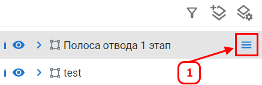
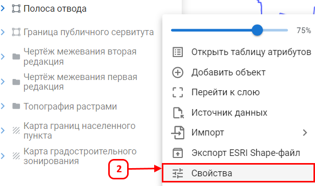
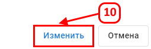
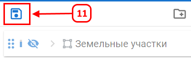

Свойства слоя
Свойства слоя используются для настройки и изменения параметров отображения слоя на карте.
Откройте дополнительное меню управления группой (1).

Для открытия свойств слоя нажмите (2).

В открывшемся окне доступны следующие настройки:
- Наименование (3) — название слоя, отображаемое в проекте.
- Минимальный и максимальный уровень масштабирования (4, 5) — определяют масштаб карты, при котором слой будет виден.
- Координатная система (6) — задает систему координат, в которой отображается слой.
- Настройка стиля (7) — позволяет выбрать один из десяти базовых стилей или настроить стиль вручную.
- Фоторежим (8) — при проколе объектов отображаются прикрепленные к ним фотографии.
- Представление (9) — выбор представления данных, влияющий на условные обозначения на карте и состав атрибутивных данных.

Нажмите Изменить (10) для сохранения параметров отображения слоя.

После завершения настроек нажмите Сохранить (11).
